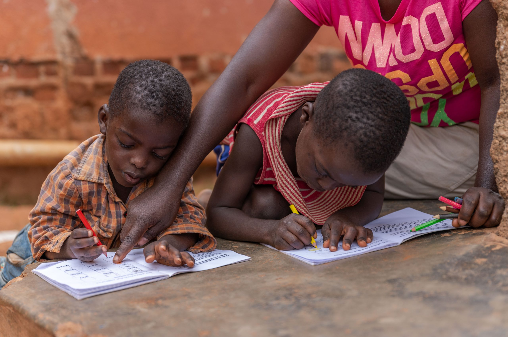
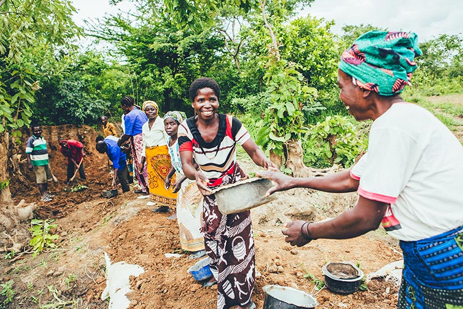

GRANT HOPE MINISTRIES UGANDA
Transforming lives in the world
Email: joramlinton@gmail.com
Contact: +256 758970505, +256 785422155
Transforming lives in the world
Email: joramlinton@gmail.com
Contact: +256 758970505, +256 785422155
Heighten Hope Ministries is achieving more with our initiatives than ever before, and we are very proud of the progress we continue to make.
Below are some of our most recent projects. Learn more about what we do, who we help, and how we work every day to create a lasting impact.

At Grant Hope Ministries, we are committed to empowering children through education by providing school fees, uniforms, supplies, tutoring, and scholarships.
We ensure that every child in our care has the opportunity to attend school, gain essential life skills, and build a brighter future.
Through your support, we continue to break the cycle of poverty and uplift the next generation in Uganda.

At Grant Hope Ministries, we understand that proper nutrition is essential for a child’s growth, health, and ability to learn.
We provide daily meals, clean drinking water, and nutritional support to children in our care, ensuring they receive the nourishment they need to thrive physically and mentally.
With your support, we are fighting hunger and building stronger, healthier lives for vulnerable children in our community.

At Grant Hope Ministries, our community outreach programs focus on creating awareness, building relationships, and offering practical support to vulnerable families and children.
We engage local communities through events, volunteer initiatives, and partnerships that promote compassion, education, and hope.
By working hand in hand with the community, we strive to create a nurturing environment where every child feels seen, supported, and valued.